Attach cloud storage
In CVAT you can use AWS-S3, Azure Blob Container and Google cloud storages to store image datasets for your tasks.
Using AWS-S3
Create AWS account
First, you need to create an AWS account, to do this, register of 5 steps following the instructions (even if you plan to use a free basic account you may need to link a credit card to verify your identity).
To learn more about the operation and benefits of AWS cloud, take a free AWS Cloud Practitioner Essentials course, which will be available after registration.
Create a bucket
After the account is created, go to console AWS-S3
and click Create bucket.

You’ll be taken to the bucket creation page. Here you have to specify the name of the bucket, region,
optionally you can copy the settings of another bucket by clicking on the choose bucket button.
Checkbox block all public access can be enabled as we will use access key ID and secret access key to gain access.
In the following sections, you can leave the default settings and click create bucket.
After you create the bucket it will appear in the list of buckets.
Create user and configure permissions
To access bucket you will need to create a user, to do this, go IAM
and click add users. You need to choose AWS access type, have an access key ID and secret access key.

After pressing next button to configure permissions, you need to create a user group.
To do this click create a group, input the group name and select permission policies add AmazonS3ReadOnlyAccess
using the search (if you want the user you create to have write rights to bucket select AmazonS3FullAccess).

You can also add tags for the user (optional), and look again at the entered data. In the last step of creating a user,
you will be provided with access key ID and secret access key,
they will need to be used in CVAT when adding cloud storage.
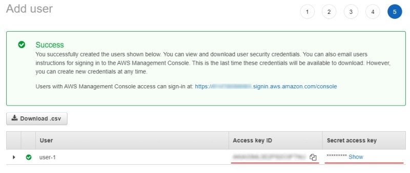
Upload dataset
Prepare dataset
For example, let’s take The Oxford-IIIT Pet Dataset:
-
Download the archive with images.
-
Unpack the archive into the prepared folder and create a manifest file as described in prepare manifest file section:
python <cvat repository>/utils/dataset_manifest/create.py --output-dir <yourfolder> <yourfolder>
Upload
-
When the manifest file is ready, open the previously prepared bucket and click
Upload: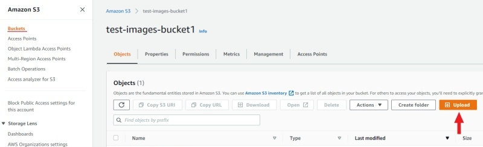
-
Drag the manifest file and image folder on the page and click
Upload: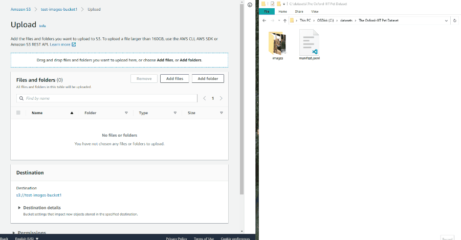
Now you can attach new cloud storage into CVAT.
Using Azure Blob Container
Create Microsoft account
First, create a Microsoft account by registering, or you can use your GitHub account to log in. After signing up for Azure, you’ll need to choose a subscription plan, you can choose a free 12-month subscription, but you’ll need to enter your credit card details to verify your identity. To learn more about Azure, read documentation.
Create a storage account
After registration, go to Azure portal.
Hover over the resource groups and click create in the window that appears.
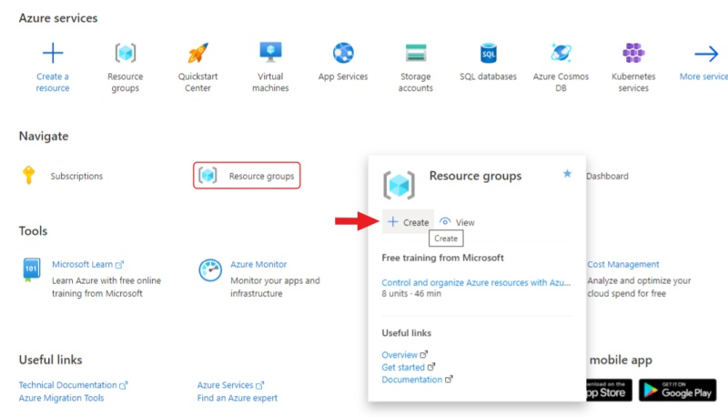
Enter a name for the group and click review + create, check the entered data and click create.
After the resource group is created,
go to the resource groups page
and navigate to the resource group that you created.
Click create for create a storage account.
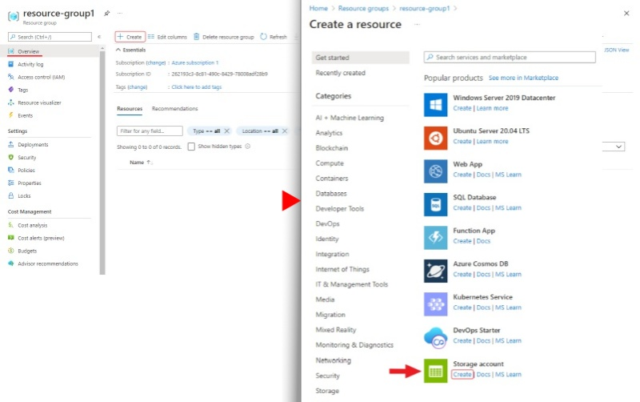
-
Basics
Enter
storage account name(will be used in CVAT to access your container), select aregion, selectperformancein our case will bestandardenough, selectredundancyenoughLRSmore about redundancy. Clicknextto go to the advanced section.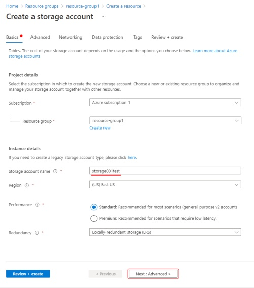
-
Advanced
In the advanced section, you can change public access by disabling
enable blob public accessto deny anonymous access to the container. If you want to change public access you can find this switch in theconfigurationsection of your storage account.After that, go to the review section, check the entered data and click
create.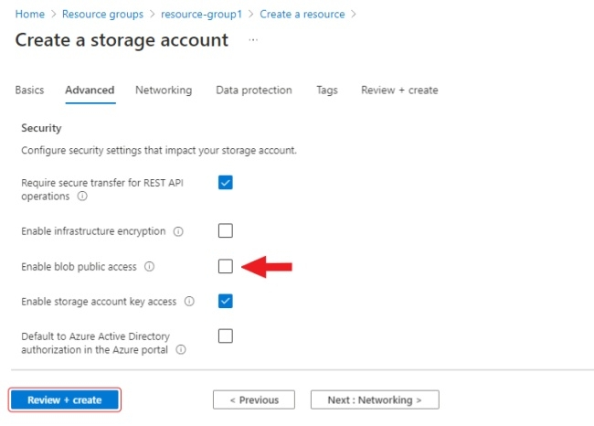
You will be reached to the deployment page after the finished,
navigate to the resource by clicking on go to resource.

Create a container
Go to the containers section and create a new container. Enter the name of the container
(will be used in CVAT to access your container) and select container in public access level.

SAS token
Using the SAS token, you can securely transfer access to the container to other people by preconfiguring rights,
as well as the date/time of the starting and expiration of the token.
To generate a SAS token, go to Shared access signature section of your storage account.
Here you should enable Blob in the Allowed services, Container and Object in the Allowed resource types,
Read and List in the Allowed permissions, HTTPS and HTTP in the Allowed protocols,
also here you can set the date/time of the starting and expiration for the token. Click Generation SAS token.
and copy SAS token (will be used in CVAT to access your container).

For personal use, you can enter the Access Key from the your storage account in the SAS Token field,
access key can be found in the security + networking section.
Click show keys to show the key.
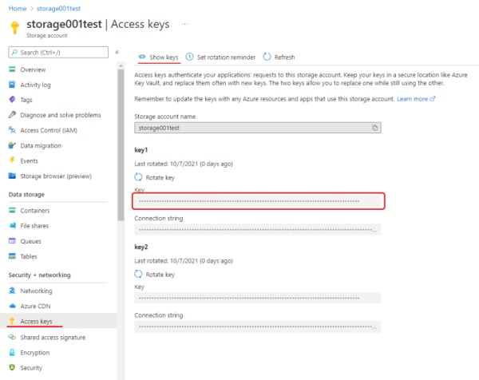
Upload dataset
Prepare the dataset as in the point prepare dataset.
-
When the dataset is ready, go to your container and click
upload. -
Click
select a filesand select all images from the images folder in theupload to folderitem write the name of the folder in which you want to upload images in this case “images”.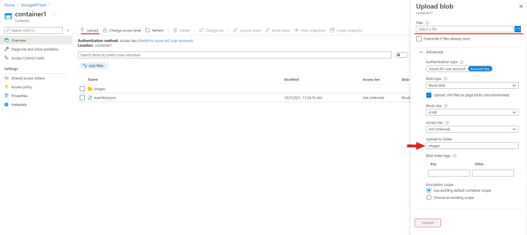
-
Click
upload, when the images are loaded you will need to upload a manifest file. When loading a manifest, you need to make sure that the relative paths specified in the manifest file match the paths to the files in the container. Clickselect a fileand select manifest file, in order to upload file to the root of the container leave blankupload to folderfield.
Now you can attach new cloud storage into CVAT.
Using Google Cloud Storage
Create Google account
First, create a Google account, go to account login page and click Create account.
After, go to the Google Cloud page, click Get started, enter the required data
and accept the terms of service (you’ll need credit card information to register).
Create a bucket
Your first project will be created automatically, you can see it on the cloud resource manager page.
To create a bucket, go to the cloud storage page
and press Create bucket. Next, enter the name of the bucket, add labels if necessary, select the type of location
for example region and the location nearest to you, select storage class, when selecting access control
you can enable Enforce public access prevention on this bucket (if you plan to have anonymous access to your bucket,
it should be disabled) you can select Uniform or Fine-grained access control, if you need protection of your
object data select protect object data type. When all the information is entered click Create to create the bucket.
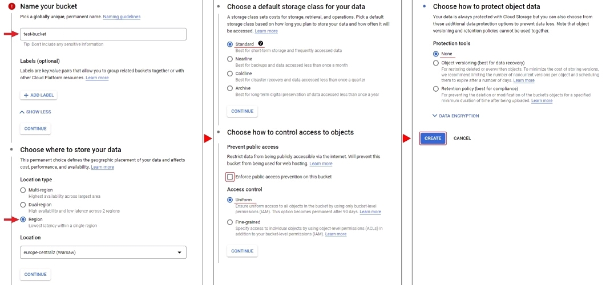
Upload
Prepare the dataset as in the point prepare dataset.
To upload files, you can simply drag and drop files and folders into a browser window
or use the upload folder and/or upload files.
Access permissions
To access Google Cloud Storage from CVAT you will need a Project ID
you can find it by going to cloud resource manager page

Create a service account and key file
To access your bucket you need a key file and a service account. To create a service account,
go to IAM & Admin/Service Accounts and press Create Service Account. Enter your account
name and click Create And Continue. Select a role for example Basic/Viewer.
Next, you can give access rights to the service account, to complete click Done.

The account you created will appear in the service accounts list, open it and go to the Keys tab.
To create a key, click ADD and select Create new key, next you need to choose the key type JSON and select Create.
The key file will be downloaded automatically.
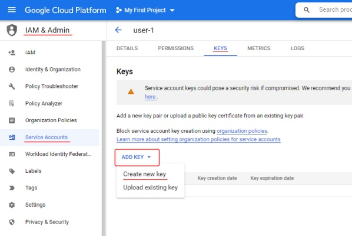
Learn more about creating keys.
Anonymous access
To configure anonymous access, open your bucket and go to the permissions tab click ADD to add new principals.
In new principals field specify allUsers, select role for example Cloud Storage Legacy/Storage Legacy Bucket Reader
and press SAVE.

Now you can attach new cloud storage into CVAT.
Attach new cloud storage
After you upload the dataset and manifest file to AWS-S3, Azure Blob Container or Google Cloud Storage
you will be able to attach a cloud storage. To do this, press the + button on the Cloud storages page
and fill out the following form:
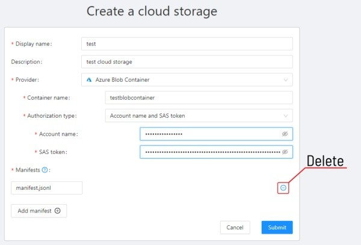
-
Display name- the display name of the cloud storage. -
Description(optional) - description of the cloud storage, appears when you click on the?button of an item on cloud storages page. -
Provider- choose provider of the cloud storage:-
-
Bucket- cloud storage bucket name. -
-
Key id and secret access key pair- available on IAM to obtain an access key and a secret key, create a user using IAM and grant the appropriate rights learn more.ACCESS KEY IDSECRET ACCESS KEY ID
-
Anonymous access- for anonymous access, you need to enable public access to bucket.
-
-
Region- here you can choose a region from the list or add a new one. To get more information click on?.
-
-
-
Container name- name of the cloud storage container.-
Authorization type:-
Account name- storage account name.SAS token- is located in theShared access signaturesection of yourStorage accountlearn more.
-
Anonymous access- for anonymous accessenable blob public accessin theconfigurationsection of your storage account. in this case, you only need the storage account name to gain anonymous access.Account name- storage account name.
-
-
-
-
-
Bucket name- cloud storage bucket name, you can find the created bucket on the storage browser page. -
Authorization type:-
Key file- you can drag a key file to the areaattach a fileor click on the area to select the key file through the explorer. If the environment variableGOOGLE_APPLICATION_CREDENTIALSis specified for an environment with a deployed CVAT instance, then it will be used if you do not attach the key file (more aboutGOOGLE_APPLICATION_CREDENTIALS). -
Anonymous access- for anonymous access, you need to enable public access to bucket.
-
-
Prefix- used to filter data from the bucket. -
Project ID- you can find the created project on the cloud resource manager page, note that the project name does not match the project ID. -
Location- here you can choose a region from the list or add a new one. To get more information click on?.
-
-
-
Manifest- the path to the manifest file on your cloud storage. You can add multiple manifest files using theAdd manifestbutton. You can find on how to prepare dataset manifesthere. If you have data on the cloud storage and don’t want to download content locally, you can mount your cloud storage as a share point according tothat guideand prepare manifest for the data.
To publish the cloud storage, click submit, after which it will be available on
the Cloud storages page.
Using AWS Data Exchange
Subscribe to data set
You can use AWS Data Exchange to add image datasets.
For example, consider adding a set of datasets 500 Image & Metadata Free Sample.
Go to browse catalog and use the search to find
500 Image & Metadata Free Sample, open the dataset page and click continue to subscribe,
you will be taken to the page complete subscription request, read the information provided
and click send subscription request to provider.
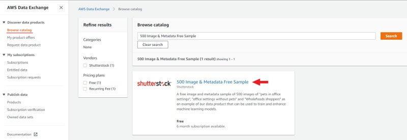
Export to bucket
After that, this dataset will appear in the
list subscriptions.
Now you need to export the dataset to Amazon S3.
First, let’s create a new one bucket similar to described above.
To export one of the datasets to a new bucket open it entitled data select one of the datasets,
select the corresponding revision and click export to Amazon S3
(please note that if bucket and dataset are located in different regions, export fees may apply).
In the window that appears, select the created bucket and click export.
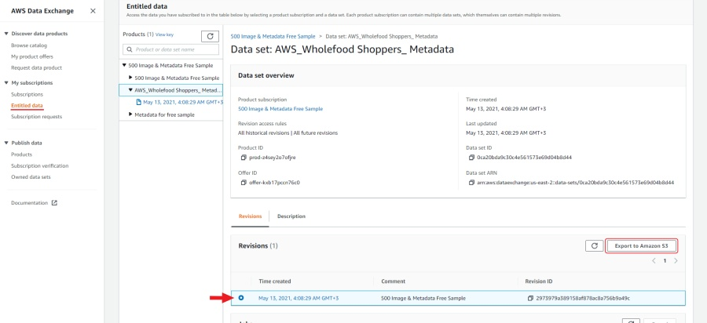
Prepare manifest file
Now you need to prepare a manifest file. I used AWS cli and
script for prepare manifest file.
Perform the installation using the manual aws-shell,
I used aws-cli 1.20.49 Python 3.7.9 Windows 10.
You can configure credentials by running aws configure.
You will need to enter Access Key ID and Secret Access Key as well as region.
aws configure
Access Key ID: <your Access Key ID>
Secret Access Key: <your Secret Access Key>
Copy the content of the bucket to a folder on your computer:
aws s3 cp <s3://bucket-name> <yourfolder> --recursive
After copying the files, you can create a manifest file as described in preapair manifest file section:
python <cvat repository>/utils/dataset_manifest/create.py --output-dir <yourfolder> <yourfolder>
When the manifest file is ready, you can upload it to aws s3 bucket. If you gave full write permissions when you created the user, run:
aws s3 cp <yourfolder>/manifest.jsonl <s3://bucket-name>
If you have given read-only permissions, use the download through the browser, click upload, drag the manifest file to the page and click upload.
Now you can attach new cloud storage using the dataset 500 Image & Metadata Free Sample.